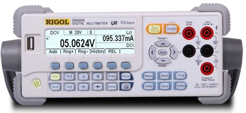

数字多用表

产品简介
□产品型号：DM305X系列
□产品名称：DM305X系列数字万用表
□DM305X系列数字万用表是一款针对高精度、多功能、自动测量的用户需求而设计的产品，集数据采集、自动测量、巡检、多种数学变换和任意传感器测量等功能于一身。
功能特性
□真正的5 3/4位读数分辨率（480,000Count）；
□高达50krdgs/s采样速率，2Mrdgs的易失性读取存储以及512krdgs的非易失性读取存储；
□16路巡检功能（可选）和多种控制软件，包括UltraLogger巡检测量与数据采集控制软件及UltraSensor任意传感器测量控制软件；
□内置10组数据存储、10组设置存储、U盘存储及上位机无限测量存储；
□丰富的接口配置，包括了USB Device, USB Host, LAN(option), RS-232, GPIB(option), 并且支持USB及Web远程控制，全面兼容主流万用表命令集
验向导；
□多种语种界面支持，多语种上、下文相关帮助；
□轻巧、便携的物理特性；
应用行业
□ 设计和调试；
□ 教育和培训；
□ 制造测试和质量控制；
□ 服务和维修